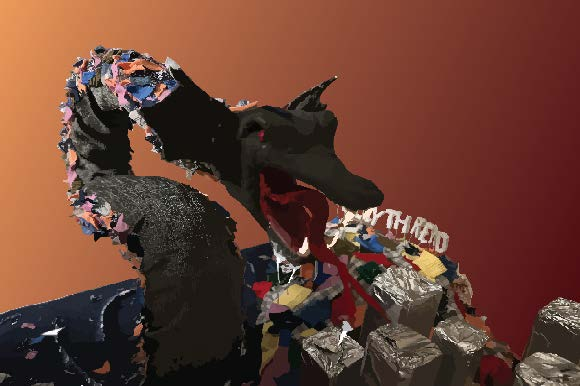
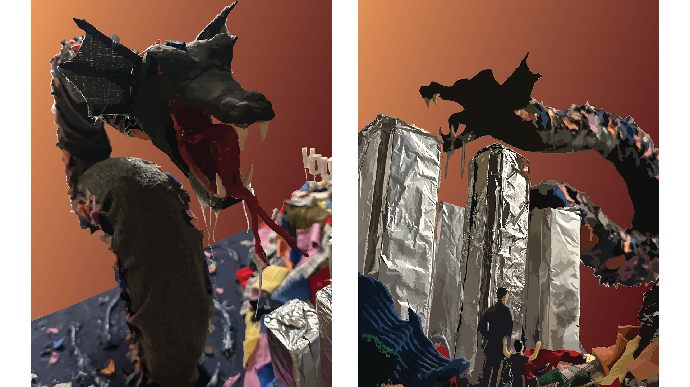
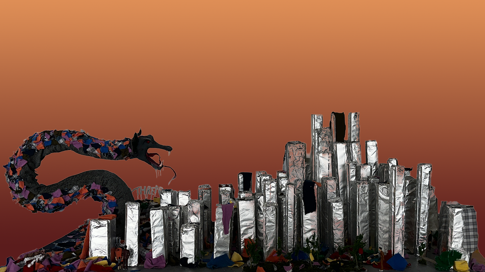
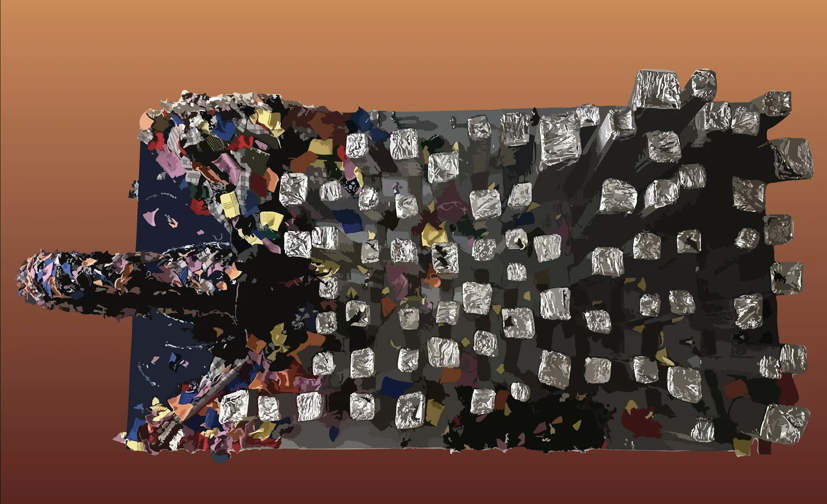

GRAPHIC DESIGN // THESIS // 2026
ATTACK IN
HOLLYTHREAD
RESERVOIR
A visual exploration of environmental storytelling, creature design, and a fictional aquatic ecosystem.

01 // THE INCIDENT
THE HOLLYTHREAD INCIDENT
Documentation surrounding the incident at Hollythread Reservoir.


02 // THE WORK
THE RESERVOIR
The final physical installation brings the
fictional
Hollythread Reservoir to life.

03 // VISUAL DETAILS
THE WORLD OF
HOLLYTHREAD
Additional views reveal the details and
physical
presence of the installation.

VIEW // 01 — SIDE

VIEW // 02 — AERIAL

4ft x 5ft diorama, which dpicts the aftermath of an attack by a mutated water serpant created by years of textile pollution. Is accompanied by the local newspaper giving more insight.
01 // PROJECT COMPLETE
ATTACK IN
HOLLYTHREAD RESERVOIR
A fictional aquatic ecosystem built through environmental storytelling, physical construction, and graphic design.
← RETURN TO ARCHIVE